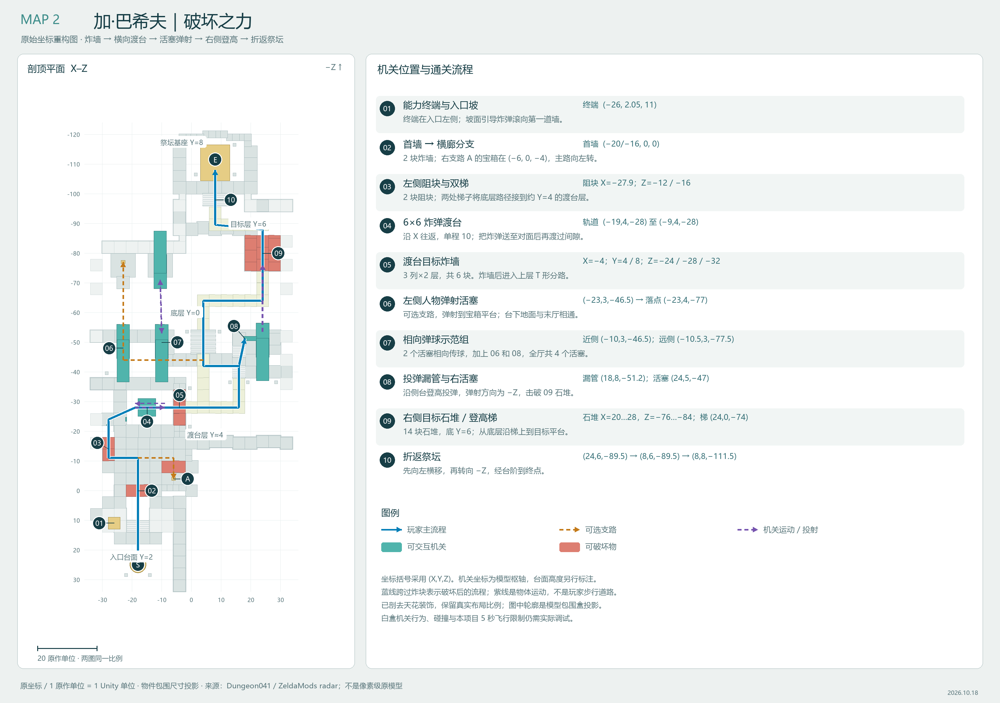
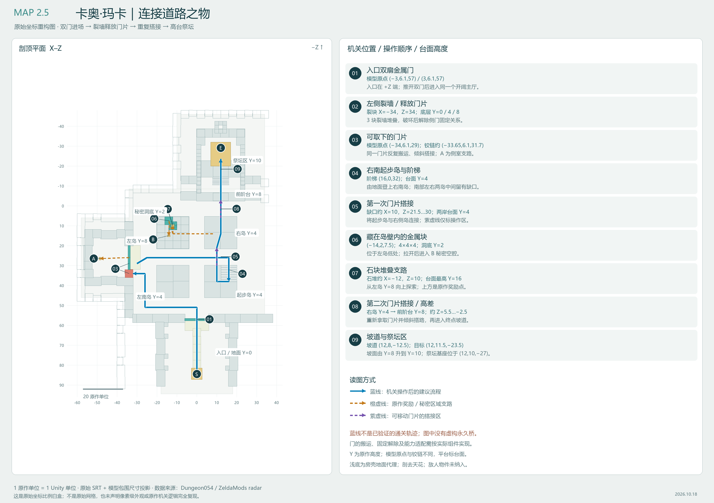
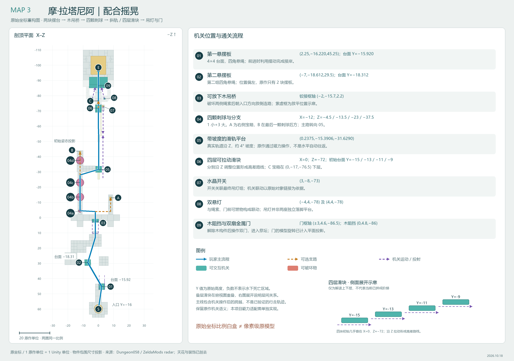
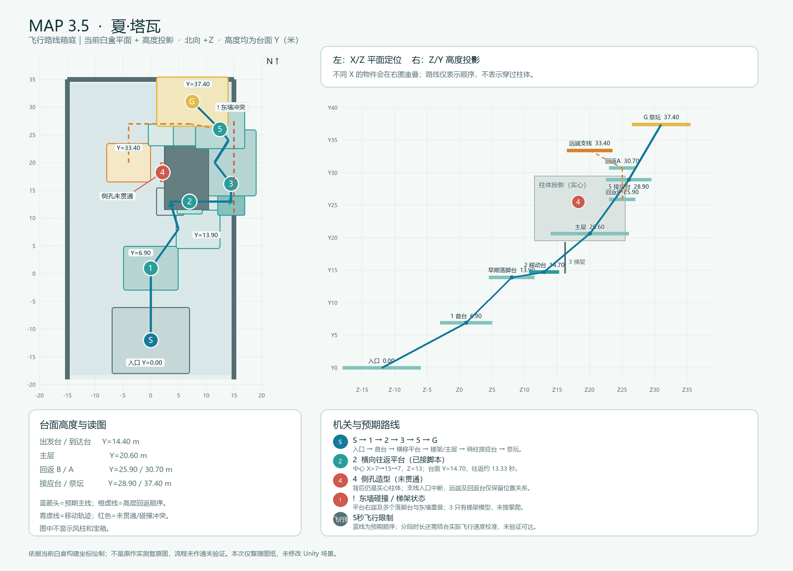

<!doctype html><html lang="zh-CN"><meta charset="UTF-8"><meta name="viewport" content="width=device-width,initial-scale=1"><title>泡涌 · 四关平面流程图</title><style>body{margin:0;background:#edf1f0;color:#173e46;font-family:"Microsoft YaHei",sans-serif}main{max-width:1600px;margin:40px auto;padding:0 26px}h1{font-size:36px;margin-bottom:12px}.intro{line-height:1.8;color:#58757a}.grid{display:grid;grid-template-columns:1fr 1fr;gap:24px;margin-top:32px}article{border:1px solid #c9d5d5;border-radius:18px;background:white;overflow:hidden}header{padding:20px 24px;display:flex;align-items:center;justify-content:space-between;gap:12px}h2{font-size:21px;margin:0}span{font-size:13px;color:#58757a}img{width:100%;display:block}p{padding:0 24px;color:#58757a;font-size:14px}a{color:#057fb8}@media(max-width:850px){.grid{grid-template-columns:1fr}header{display:block}span{display:block;margin-top:8px}}</style><main><h1>《泡涌》四关平面流程图</h1><div class="intro">Map2 / Map2.5 / Map3 按原作物件坐标与包围尺寸绘制；Map3.5 保留前版白盒图。<br>机关编号、流程和高度见各图。原始坐标比例白盒不等于像素级原模型；流程未经通关验证。</div><section class="grid"><article><header><h2>Map2｜加·巴希夫</h2><span>原始坐标 / 新重构</span></header><a href="Map2_加巴希夫_原始坐标流程图.png" target="_blank"></a><p><a href="Map2_加巴希夫_原始坐标流程图.png" download>下载原图</a> · 点击图片查看全尺寸</p></article><article><header><h2>Map2.5｜卡奥·玛卡</h2><span>原始坐标 / 新重构</span></header><a href="Map2_5_卡奥玛卡_原始坐标流程图.png" target="_blank"></a><p><a href="Map2_5_卡奥玛卡_原始坐标流程图.png" download>下载原图</a> · 点击图片查看全尺寸</p></article><article><header><h2>Map3｜摩·拉塔尼阿</h2><span>原始坐标 / 新重构</span></header><a href="Map3_摩拉塔尼阿_原始坐标流程图.png" target="_blank"></a><p><a href="Map3_摩拉塔尼阿_原始坐标流程图.png" download>下载原图</a> · 点击图片查看全尺寸</p></article><article><header><h2>Map3.5｜夏·塔瓦</h2><span>前版白盒 / 飞行适配</span></header><a href="Map3_5_夏塔瓦_平面流程图.png" target="_blank"></a><p><a href="Map3_5_夏塔瓦_平面流程图.png" download>下载原图</a> · 点击图片查看全尺寸</p></article></section></main></html>